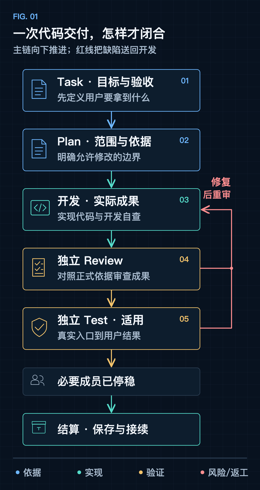
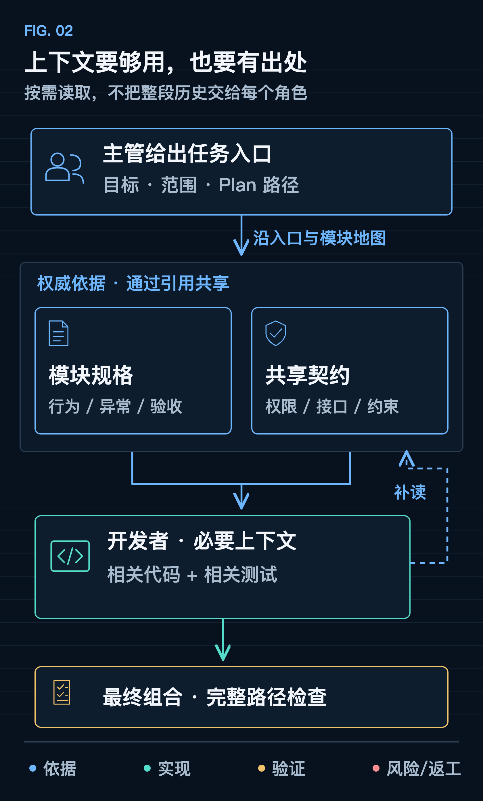
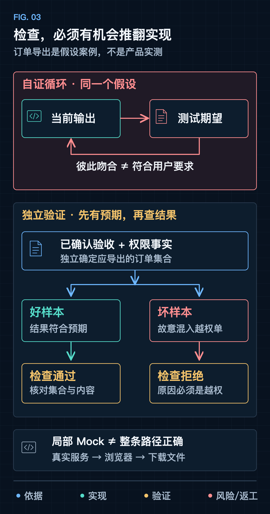
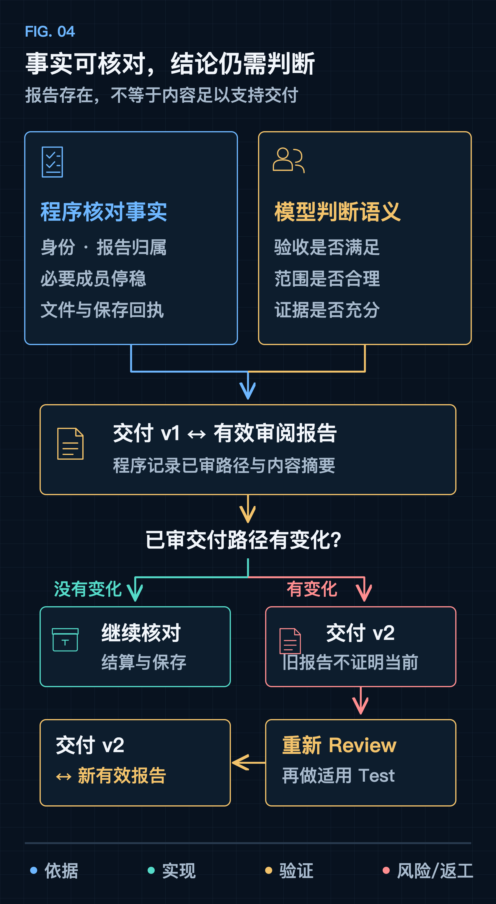

开明 · 工程实践
AI 说“完成了”，然后呢？
从会写代码到可交付的 Agent
你让 AI 补一个功能。它改了代码，跑了测试，最后回复：“已完成，全部通过。”
你打开页面，才发现按钮有了，关键流程没接上；正常情况能走，失败后用户却不知道发生了什么。再追问测试怎么做的，它确实运行了测试，只是那些用例恰好都在验证它自己对需求的理解。
几轮修补之后，终于能用了。过几天换个会话，新的 Agent 不知道当时为什么这样设计，也不知道哪些边界仍未验证。你又成了项目的人工记忆：重新解释需求、翻聊天、辨认哪一句“完成”值得相信。
这些场景背后有一个共同问题：我们把“执行结束”“检查通过”和“用户目标达成”，当成了同一件事。
它们之间隔着一条需要被证明的链路。开始写代码之前，Agent 是否找到了完整、有效的需求？代码写出来了，未必实现了正确行为；测试运行过了，未必能识别错误；这次做对了，也未必留下足够依据让下次继续。
我们在做一个叫“开明”的项目，尝试围绕这条链路设计一个能持续推进软件项目的 AI 工作台。模型能力当然重要，但我们更关心另一个问题：怎样让一次生成，成为可以核对、可以追溯、可以接续的交付？

01 / 交付标准，要先于实现
交付标准，要先于实现
先问：最后要拿到什么
先不谈多 Agent，也不谈工作流引擎。把一项工作交出去，最后究竟要拿到什么？
首先是实际成果：功能能用，或文档足以支持下一步。其次是可信的边界：检查过哪些情况，哪里失败，哪里还不知道。最后是可接续的项目：换一个人或会话，仍能找到当前行为、实现位置、验证证据和下一步。
由此反推，交付系统要保存的就不只是对话：目标和验收、执行与检查的区分、实际证据，以及确认后写回项目的知识。
用一个假设案例贯穿全文：给业务系统增加“导出订单”功能。以下要求只是为了说明方法，不代表开明实际交付过这个业务功能。
案例中的验收假设用户已确认：导出结果遵循当前筛选条件，只包含账号有权查看的订单；成功时能下载有效文件；失败时明确提示，并允许再次尝试。
只看实现动作，新增按钮、接口和下载逻辑，就很像做完了。看用户结果，问题会具体得多：文件里的订单是否符合筛选？有没有混入其他账号的数据？服务报错时，页面会不会仍然显示成功？再次点击是否还能工作？
完成标准必须先于实现存在。 否则，“完成”就会悄悄变成“当前代码已经做到的那些事情”。
把工作从聊天里拿出来
聊天适合表达意图、讨论取舍，却不适合独自承担交付记录。一段对话里有被放弃的建议、临时判断和后来修正的结论。下一位 Agent 不该靠重读整段历史，去猜哪一版才生效。
所以我们把一次正式工作组织为 Task：保存这次要达到的目标、依据、当前阶段和交付报告。它的边界是一次明确的交付，不是把整个项目塞进一个永远结束不了的任务。
围绕 Task，要先写下一份与规模相称的计划，最关键的两部分是验收和范围：什么结果算完成，这次允许改哪里。小修改一段话就够。发现依据不足时，应补设计或请用户决定，不能由开发者自己补出产品承诺；改变目标或验收，也不能藏进“顺手优化”里。
02 / 依据充分，才能独立推进
依据充分，才能独立推进
让需求能被独立读懂
有了 Task，还要回答：它引用的需求，Agent 找得到、读得懂吗？把全部文档、聊天和代码塞进长上下文，并不能解决这个问题。当前规则、旧提议和无关模块混在一起，关键约束反而更难辨认。《Lost in the Middle》（TACL 2024）在所测的任务中发现，相关信息处在长上下文中间时，更难被有效利用。当然，不能据此断言所有模型、所有任务都会这样退化，但“能装下”确实不等于“能用好”。
我们的做法有几条：
- 需求按长期的用户能力组织，而不是按前后端或聊天轮次拆。订单筛选、导出和失败重试，在同一份规格里说完整。
- 共享规则（比如权限）只在一个权威位置完整定义，其他地方引用，不各写一套近似说法。
- 设计要求、从代码观察到的实现、实际验证到的结果，分开记录；没核实的就写“未知”。
- 如果起点是一份总需求，拆分时要交代原文每一部分的去向，否则文件变短了，需求却可能丢了。
开发者只需沿着“项目入口、模块地图、目标模块规格、本次计划、相关代码与测试”这条路径读，不必加载无关模块，也不必猜设计聊天里的最终决定。遇到缺口，可以继续补读。
这样需求才能被独立理解，实现才能独立推进，成果才能接受独立检查。但独立推进不等于各自为政：接口含糊时，两边各自猜测，只会把分歧推迟到联调。最后仍要检查组合后的完整路径，不能把各自“通过”相加，就当成整体通过。

03 / 检查要能推翻实现
检查要能推翻实现
测试全绿，为什么仍然不够
回到订单导出。开发者先写一个函数，再用函数当前返回的内容作为期望值；或者 Mock 一个成功响应，只断言下载方法被调用。这样的用例即使全绿，也没有回答“筛选和权限是否正确”。
问题不在于测试是 AI 写的，而在于测试与实现共享了同一个未经核实的假设。两者彼此吻合，不能证明它们吻合用户要求。
所以审核首先要问：期望值从哪里来？
筛选规则和可访问范围，应来自已确认的验收与权限事实。可以准备一组独立可控的数据：筛选内且可访问的订单、筛选外的订单、无权访问的订单。检查结果应与预先确定的应导出集合一致，而不是把程序第一次导出的文件存下来，当作以后永远正确的答案。
还有一个更尖锐的问题：如果结果是错的，这个检查真的会发现吗？
可以给检查器喂一份刻意混入越权订单的坏文件。它必须真实拒绝，并指出越权记录。若它仍然通过，说明“检查通过”没有区分力；若它只是因为文件打不开、依赖缺失或超时而报错，也不算识别出了权限问题。
这就是负向控制：让已知错误因预期原因失败，检验检查本身是否有效。报告要保留输入、命令、实际观察和拒绝原因，不能只留下一个通过数量。

同样的思路适用于更复杂的场景。比如取消订单后的退款，渠道只是“受理”，页面就不该显示“已退款”。测试可以故意把“受理”映射成“成功”，同一检查应当因此失败；如果照样通过，它就没有观察到关键结果。
单元测试和 Mock 仍然有价值，适合开发时快速定位逻辑。但它们证明的是替代依赖下的局部行为，不能直接证明真实服务、权限数据、浏览器和下载文件组成的整条路径正确。适用的独立测试要从真实入口走到最终结果；环境缺失，就记录为阻断或未执行，不能用局部全绿替换。
负向控制也不是正确性的保证。抓住一个坏样本，只说明这一类已知错误能被识别；未知缺陷和遗漏的需求仍可能存在。它的价值是减少自证循环，不是颁发“绝对正确”的证书。
独立检查，要独立到哪里
最容易实现的“多 Agent”，是让另一个角色阅读作者总结，再回复一份审核意见。角色名称变了，判断却仍被同一套解释牵引。
我们要求 Review 使用独立上下文：读取目标、验收和范围、正式依据、实际成果与真实证据，不读取作者或主管聊天中的自评。审核者要自己回答：这次要求是否完整，改动是否越界，测试的期望值有没有独立来源，证据是否真的支持结论。Review 通过之后，适用的工作再由独立 Test 验证用户结果与相关回归；发现缺陷，返回修复，重新审核并执行适用测试。已审交付文件变化后，旧结论不再证明当前成果。
这里的独立，是责任和信息来源的独立。同一模型可以承担不同角色，换一个模型也不会自动产生独立证据；多个模型若都照抄同一份错误验收，仍然可能一致通过。隔离上下文能减少作者叙述带来的偏向，却不能保证零漏检，验收本身也必须接受质疑。
所以多 Agent 的价值不在数量，而在于：执行者的结论，有机会被另一个上下文依据实际成果推翻。
04 / 把证据留在项目里
把证据留在项目里
程序守住事实，模型承担判断
只靠提示词要求“先审核、再测试、最后结算”，仍然留下一个问题：这些事情到底发生过没有？
程序擅长核对可观察的事实：报告是否存在，提交者是否属于当前 Task，必要成员是否已停稳，文件是否保存，被审阅的交付物后来有没有改变。模型则承担业务判断：验收是否满足，越界改动是否合理，用户授权是否覆盖当前动作。
程序能检查计划里有没有验收一节，却不知道验收写得是否充分；能确认测试报告存在，却不知道测试有没有按用户要求设计。所以我们让审阅结论绑定被审阅的交付文件；这些文件变化后，旧结论就不再证明当前成果。代码交付绑定代码路径，docs/** 与根目录 Markdown 作为结算输出；文档交付仍绑定其文档。
这些事实门能阻止一部分没有证据的收口，但不会自动识别所有假测试。报告质量、期望值来源和业务结果，仍需要主管与独立 Agent 判断。

流程的重量，要与风险相称
改一个按钮颜色也要跑完整套产品验收，流程很快就没人用；改权限规则只测按钮能不能点，流程又失去了保护作用。
所以我们按影响选择验证强度：纯展示变化，在不改变事件、状态、请求、数据，也不触及公共布局或共享设计令牌的前提下，独立 Review 后结算即可；局部后端行为变化，增加定向单元和接口集成检查；页面交互变化，再加一条聚焦的真实浏览器路径。适用的独立 Test 覆盖本次验收与相关回归；涉及共享契约、迁移、权限、状态机或公共布局等高风险变化，才扩大到跨模块验证。导出功能涉及权限，就不能因为界面只多了一个按钮，算成轻量修改。
轻量化应削减无关成本，不能削掉当前工作必需的责任。每增加一个机制，也都应该能说明它解决了当前哪个具体问题。
最后一公里：让项目记住
即使导出功能已经通过检查，如果结论只存在于当前聊天，下次仍然要重新发现它。
所以收尾是交付的一部分：把确认的行为和实现状态写回规格，留下代码、检查与证据入口，处理关联待办，记录遗留问题。记录要区分三个层次：设计要求如此，从代码观察到如此，实际运行验证如此。看到接口存在，不能写成浏览器已验收；一次成功，也不能外推所有异常分支都可靠。
已有运行证据我们也用同样的标准要求自己。按项目 2026 年 11 月 9 日的验证记录，真实模型已经跑通过一条完整链路：创建 Task、开发、Review、Test、结算、结束；交付文件真实存在，测试实际运行，报告有保存。其中一次调用因为计划缺少验收被程序拒绝，模型补齐后才继续。
证据的边界这只证明了相应程序路径在真实模型下能走通，不等于整个产品已经验收。部分人工界面走查尚未执行，负向控制要求和验证档规则能否被真实模型持续遵守，还需要后续观察。已有证据、未执行的检查和设计目标，需要并列呈现。
对使用者而言，判断一项 Agent 工作值不值得接收，可以落到几个朴素问题：
- 依据从哪里来？
- 实际交付了什么？
- 凭什么说它满足要求？
- 检查能不能识别错误？
- 还有哪些边界未知？
- 下次从哪里继续？
一套交付系统的作用，就是让这些答案留在项目里，能够被打开、核对和质疑。这样，“完成了”才有机会从一句让人放心的话，变成一个有证据支持、也允许被推翻的结论。
关于开明
开明是一个持续推进软件项目的 AI 工作台，面向个人开发者和软件项目负责人。它围绕主管协作、待办与规格、任务交付和项目知识组织工作，目标是让成果经过适用的独立检查，并让下一次工作接得上。本文介绍其中的设计思路与已有验证边界。